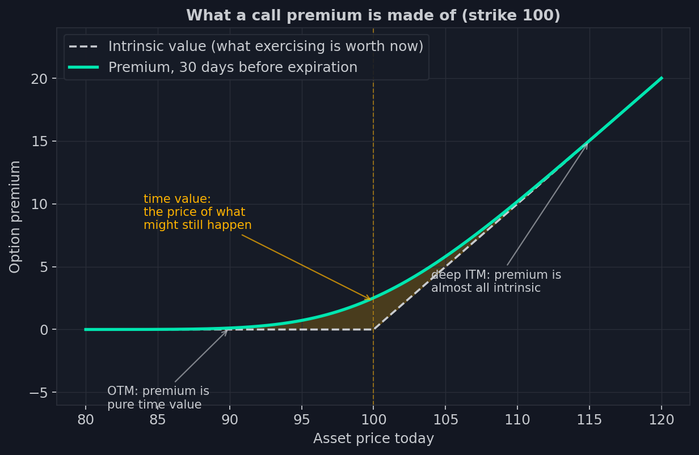
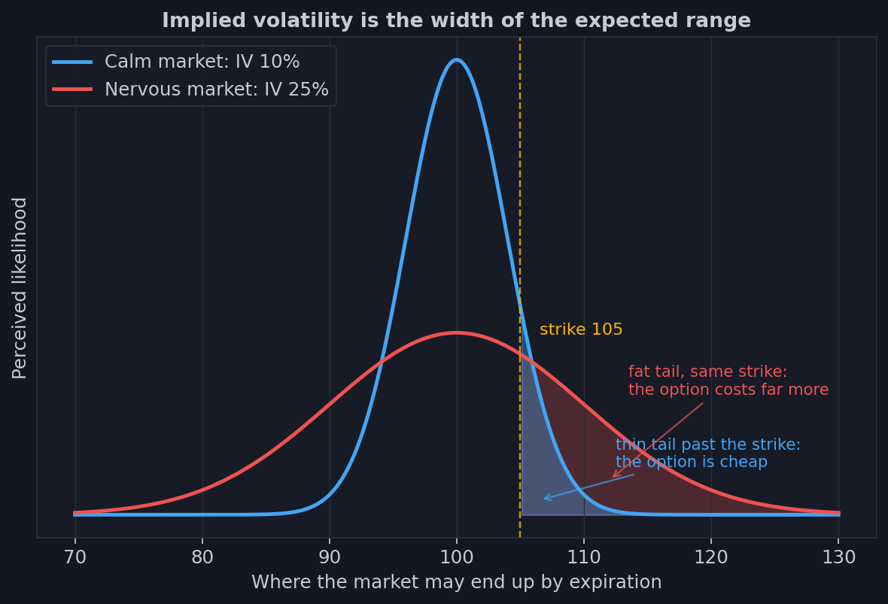
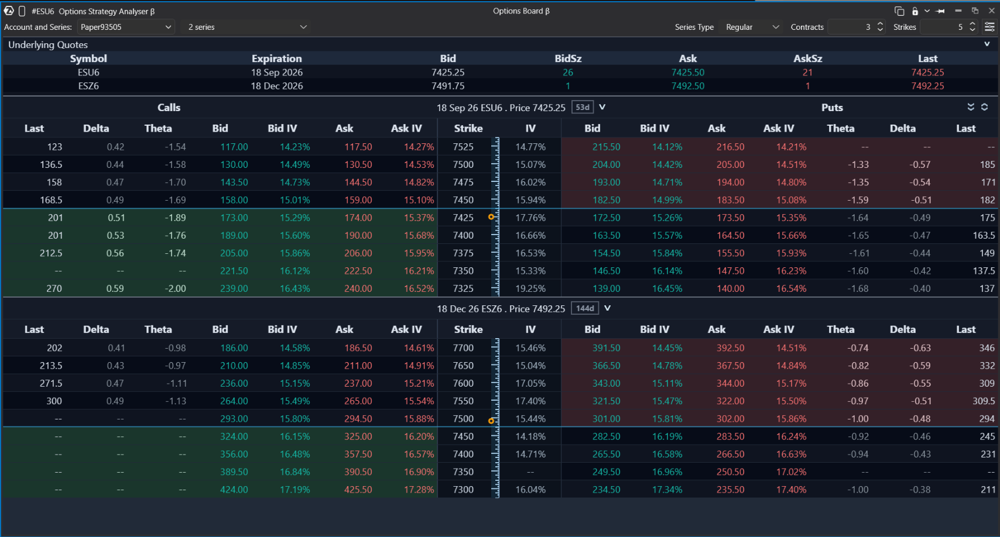

2. Mecánica: de qué está hecho el precio de una opción
Lunes, y el mercado cerró justo donde abrió: el índice no se movió ni medio por
ciento en todo el día. Sin embargo, el call que llevabas vigilando desde la mañana
pierde siete. El activo está quieto — la opción sangra dinero. ¿Hacia dónde se
escurre?
La respuesta está escondida en la anatomía de la prima. En la lección anterior
pagamos un precio por el derecho y nunca preguntamos de dónde salía. Ahora sí lo
preguntamos: de la composición del precio nacen las griegas, la volatilidad y todo
lo que medirán nuestros indicadores.
Las dos partes de la prima
Toma un call en el strike 100 con el activo en 104. El derecho a comprar a 100 algo
que vale 104 tiene un valor evidente: cuatro puntos que podrías embolsarte ahora
mismo. Esos cuatro puntos se llaman valor intrínseco — lo que vale el derecho
si se ejerce de inmediato.
Pero en el mercado ese call no cotiza a cuatro puntos, sino a, digamos, seis y
medio. ¿De dónde salen los otros dos y medio? Eso es el valor temporal — el
precio de lo que todavía puede pasar antes del vencimiento. Al activo le queda
tiempo para subir más, y el mercado cobra dinero por esa posibilidad.

El gráfico muestra ambas partes a la vez. La línea blanca discontinua es el valor
intrínseco: cero a la izquierda del strike, una recta a la derecha — el conocido
quiebre del diagrama de payoff de la lección 1. La curva verde es la prima de
mercado un mes antes del vencimiento. La capa amarilla entre ambas es ese mismo
valor temporal. Fíjate dónde es más gruesa: justo en el strike. Ahí es donde la
incertidumbre llega a su máximo — el destino de la opción puede decidirse hacia
cualquiera de los dos lados.
Según dónde esté el precio respecto al strike, las opciones caen en tres clases, y
estas palabras estarán por todas partes: in the money (ITM) — ya existe valor
intrínseco; at the money (ATM) — el precio está justo en el strike; out of
the money (OTM) — sin valor intrínseco, toda la prima es valor temporal. Las
opciones OTM baratas son esos «boletos de lotería» de la lección 1: un derecho al
que aún le falta cobrar sentido.
Ahora el acertijo del lunes se resuelve solo. El call del comienzo de esta lección
no tenía valor intrínseco — solo temporal. Pasó un día, no ocurrió nada, las
posibilidades de «llegar a tiempo» menguaron — y el valor temporal se marchitó.
Nadie robó el dinero: se escurrió hacia el mismo lugar al que se escurre un seguro
prepagado por un año — hacia el pasado, un día cada vez.
Volatilidad: el precio de la incertidumbre
Que el valor temporal depende del tiempo hasta el vencimiento es intuitivo. El
segundo factor es menos obvio y mucho más importante para todo lo que viene:
depende de cuán ancho ve el mercado el abanico de desenlaces futuros.

Las dos curvas del gráfico son la imagen que tiene el mercado de dónde acabará el
activo al vencimiento. La azul es un mercado tranquilo: casi todos los escenarios
se apiñan alrededor del precio actual, la cola más allá del strike 105 es flaca, y
el call de ese strike cotiza por centavos. La roja es un mercado nervioso: la
campana se ha ensanchado, los escenarios lejanos se han vuelto genuinamente
posibles, y ese mismo strike pasó de «improbable» a «perfectamente alcanzable». El
contrato en sí no cambió — mismo strike, mismo vencimiento. Solo cambiaron las
expectativas del mercado, y el precio de la opción es ahora varias veces mayor.
El ancho de esa campana es la volatilidad. Y ahora el truco principal. Nadie le
dice al mercado el ancho correcto — nadie lo conoce. La lógica corre al revés:
vemos a cuánto se negocian realmente las opciones y calculamos qué ancho de
campana implican esos precios. De ahí el nombre — volatilidad implícita (IV).
La IV no es el pronóstico de un analista. Es el consenso de todos los que arriesgan
dinero real sobre el tamaño de la incertidumbre que viene.
Una sutileza con la que la gente tropieza constantemente: la campana se ensancha en
ambas direcciones a la vez. La IV mide el alcance de las expectativas, no su
dirección — antes de una noticia importante sube sea cual sea el ánimo del mercado,
porque el mercado sabe que viene un movimiento, pero no hacia dónde.
Exactamente por eso los precios de las opciones son una fuente de información
única: llevan horneada la expectativa colectiva sobre la magnitud del movimiento.
El famoso VIX — el «índice del miedo» de las noticias — se calcula precisamente
así: de los precios de las opciones del S&P 500 se extrae el ancho implícito de la
campana a un mes vista.
La cadena: cientos de instrumentos sobre un solo activo

Una acción tiene un precio. Las opciones sobre esa misma acción vienen como una
tabla entera: se llama cadena de opciones (o board). Las filas son strikes,
espaciados cinco puntos en los índices; cada strike recibe un call y un put; y toda
la tabla se repite para cada fecha de vencimiento. Multiplica: docenas de strikes
por docenas de fechas por dos tipos — un solo subyacente carga miles de
instrumentos separados, cada uno con su precio, su volumen y su propia vida.
En cada celda de la cadena, además de las cotizaciones, viven dos números que nos
importan críticamente. Distinguirlos es una habilidad obligatoria para todo este
curso.
Volumen — cuántos contratos se negociaron hoy. El contador se pone a cero cada
mañana. Es una medida de actividad: dónde estuvo hoy la pelea.
Open interest (OI) — cuántos contratos existen ahora mismo: abiertos y aún no
cerrados. Es una medida de posiciones acumuladas: dónde está parado el dinero.
La mecánica que los une es más sutil de lo que parece. Una operación cambia el OI
solo cuando ambas partes abren posiciones nuevas: el comprador A y el vendedor B
crearon un contrato — el OI subió en uno. Si en cambio A compra para cerrar su
viejo corto mientras B vende para cerrar su viejo largo, el contrato se extingue —
el OI bajó. Y si un lado abre mientras el otro cierra, el contrato simplemente
cambió de manos — el OI ni se movió. El volumen, mientras tanto, sube en los tres
casos. Cien mil contratos de volumen pueden significar cualquier cosa: dinero
fresco entrando, dinero viejo huyendo, o un simple pásalo-al-siguiente. E incluso
una subida del OI no dice por sí sola quién llegó: todo contrato tiene dos lados, y
a cada nuevo largo le corresponde un nuevo corto. Quién exactamente estuvo detrás
de la operación es precisamente lo que los datos clásicos no contienen en absoluto.
Recuerda esta ambigüedad: la mitad de la conversación sobre datos descansará en
ella.
Vencimientos: el calendario por el que vive el mercado
El ritmo clásico del mercado de opciones es mensual: las series principales vencen
el tercer viernes del mes. El mercado llama a ese día OPEX (option
expiration) — una palabra que volverás a encontrar tanto en este curso como en
nuestros indicadores. Las series mensuales son las más antiguas y las más pesadas:
en ellas viven durante meses las coberturas institucionales y los productos
estructurados, acumulando los mayores arsenales de posiciones, así que su
vencimiento trae las mayores reorganizaciones mecánicas del mes. Luego las bolsas
añadieron series semanales, y en el índice S&P 500 las opciones ya vencen cada
día de negociación — cómo eso cambió el mercado merece una lección propia, y ahí
es donde empieza nuestra historia principal.
En el SPX las dos familias de series difieren hasta en el ticker, y la diferencia
nos importará más adelante:
SPX — las series mensuales. Se liquidan por la mañana: el precio final lo
fija la apertura del mercado del tercer viernes, y formalmente la serie vence a
las 09:15 hora de Nueva York — antes incluso de que abra la sesión regular. Así
que ese mismo viernes la serie mensual ya no se negocia: su destino se decidió en
la apertura.
SPXW — las series semanales (y diarias). Se liquidan por la tarde, a las
16:00 con el cierre del mercado; en los días recortados previos a festivos, a las
13:00.
De aquí sale un detalle que confunde incluso a los profesionales: en la fecha del
tercer viernes viven dos series con la misma fecha de vencimiento — la mensual
matinal SPX y la semanal vespertina SPXW. La matinal muere a las 09:15; la
vespertina se negocia todo el día. Quien diga «el vencimiento del viernes» tiene
que precisar cuál — y nuestros indicadores, como veremos, las mantienen
estrictamente separadas, hasta la hora exacta de vencimiento.
Dos distinciones técnicas para terminar — aburridas justo hasta el momento en que
el cuadro deja de cuadrar sin ellas.
Estilo de ejercicio. Una opción americana puede ejercerse cualquier día hasta
el vencimiento; una europea — solo en la fecha de vencimiento. Los nombres no
reflejan geografía alguna: ambas se negocian en Chicago. Las opciones SPX son
europeas.
Forma de liquidación. Las opciones sobre acciones terminan en entrega al
ejercerse: el comprador del call recibe las acciones de verdad. Un índice no se
puede entregar — nadie va a acarrear un saco con quinientas acciones en las
proporciones correctas —, así que las opciones sobre índices se liquidan en
efectivo: el lado perdedor simplemente paga la diferencia.
El complejo SPX: un solo ecosistema
Armemos ahora la familia de instrumentos alrededor de la cual está construido todo
este curso.
SPX — el propio índice S&P 500. Es un número, no una mercancía: no puedes
comprar «un SPX». Pero sobre ese número existen opciones — de estilo europeo,
liquidadas en efectivo, con un multiplicador de cien dólares por punto. Es el mayor
mercado de opciones sobre acciones del mundo, y se negocia en la CBOE.
ES — el futuro del S&P 500 en la CME. Es lo que operan los traders de futuros,
y es el gráfico donde viven los indicadores.
SPY — el fondo cotizado que replica el índice; la versión minorista de lo
mismo, diez veces menor en nominal.
VIX — no es un instrumento sino un termómetro: la volatilidad implícita
extraída de los precios de las opciones SPX.
La propiedad clave de la familia: todos sus miembros están encadenados por
arbitraje. Deja que el precio del ES se aleje del nivel del SPX — y los
arbitrajistas se comerán la diferencia en segundos. Por eso los sucesos en un
mercado de la familia resuenan al instante en el resto — y las operaciones de
cobertura de los market makers de opciones SPX aterrizan directamente en el futuro
ES, en el mismo libro de órdenes que miran nuestros traders. Más adelante en el
curso saltaremos libremente entre «el índice», «SPX» y «ES» — ahora ya sabes por
qué es legítimo.
La prima, como ahora vemos, depende de tres cosas a la vez: dónde está el precio
respecto al strike, cuánto tiempo queda y cuán ancha es la campana de
expectativas. Cambia cualquiera de ellas — y la prima cambia. Los profesionales
dejaron hace mucho de discutir el precio de una opción como un solo número:
desarmaron su sensibilidad en componentes y dieron a cada uno el nombre de una
letra griega. Ese idioma — delta, gamma, theta, vega — es la próxima lección. Y
también el último paso antes de conocer al protagonista del curso.
- Prima = valor intrínseco (lo que vale el derecho ahora mismo) + valor temporal (el precio de lo que aún puede pasar).
- La IV es la volatilidad implícita: el ancho de las expectativas del mercado, calculado hacia atrás a partir de los precios reales de las opciones.
- El volumen es la actividad del día; el OI, las posiciones acumuladas; ninguno dice quién está en qué lado.
- OPEX es el tercer viernes, el vencimiento de las series mensuales: las mensuales SPX liquidan por la mañana (vencen a las 09:15), las semanales SPXW por la tarde (16:00); ese día conviven dos series con la misma fecha.
- SPX, ES, SPY y VIX están encadenados por arbitraje en un solo complejo: lo que pasa en un mercado golpea a los demás al instante.